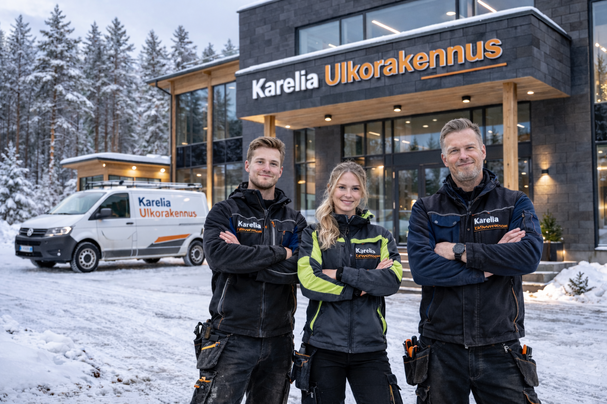

Meistä
Tietoa yrityksemme historiasta, arvoista ja toimintatavasta.
Karelia Ulkorakennus Oy
Karelia Ulkorakennus Oy on joensuulainen ulkorakentamiseen erikoistunut yritys. Rakennamme terasseja, pergoloita, piharakennuksia ja aitoja sekä toteutamme piharemontteja omakotitaloihin, mökeille ja pienille taloyhtiöille.

Yrityksen tausta
Karelia Ulkorakennus Oy sai alkunsa halusta tehdä piharakentamista selkeästi ja laadukkaasti. Yrityksen toiminta on kasvanut paikallisista pihatöistä kokonaispalveluksi, jossa yhdistyvät suunnittelu, rakentaminen ja viimeistely. Tunnemme Pohjois-Karjalan olosuhteet, joten osaamme valita ratkaisut, jotka kestävät käytössä pitkään.
Toimintatapamme
Toimintatapamme on suoraviivainen: kuuntelemme toiveet, käymme kohteen läpi paikan päällä ja annamme selkeän kirjallisen tarjouksen. Työ tehdään sovitussa aikataulussa, pidämme asiakkaan ajan tasalla koko projektin ajan ja viimeistelemme pihan siistiksi ennen luovutusta.
Arvomme
Näillä arvoilla rakennamme jokaisen kohteen Joensuussa ja muualla Pohjois-Karjalassa.
Rehellisyys
Selkeä tarjous ennen työn aloitusta ja avoin viestintä koko projektin ajan.
Laatu
Huolellinen työnjälki, kestävät materiaalit ja rakenteet, jotka toimivat vuodesta toiseen.
Paikallisuus
Olemme paikallinen toimija Joensuusta, ja tunnemme Pohjois-Karjalan pihat ja sääolosuhteet.
Asiakaslähtöisyys
Suunnittelemme ratkaisut asiakkaan arkeen sopiviksi, emme valmiin mallin mukaan.
Toimialueemme
Toimimme koko Pohjois-Karjalan alueella. Rakennamme ja remontoimme ulkotiloja sekä kaupungeissa että maaseudulla, ja palvelemme kaikkia alueen kuntia.
- Joensuu ja lähikunnat
- Kontiolahti
- Liperi
- Outokumpu
- Polvijärvi
- Ilomantsi
- Kaikki muut Pohjois-Karjalan kunnat